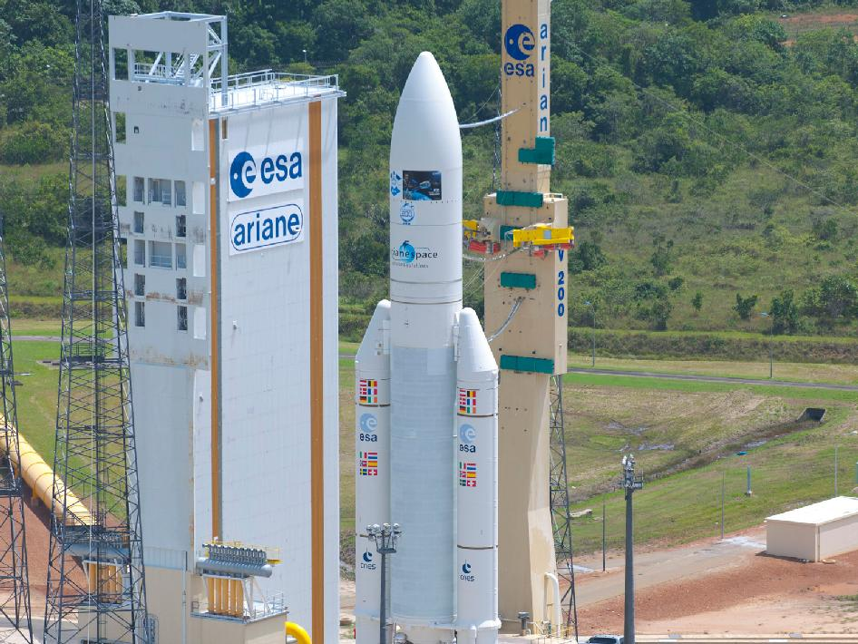

	

		<?php
    // Include the menu
    include '../../../menu.php';

    // Get the current URL of the executing script
    $currentUrl = $_SERVER['PHP_SELF'];

    // Extract the directory path from the URL
    $menuDirectory = rtrim(dirname($currentUrl), '/'); // Remove trailing slashes

    // Function to convert relative URLs to absolute URLs based on the menu directory
    function makeAbsoluteUrl($url, $menuDir) {
        if (strpos($url, '/') === 0) {
            return $url; // URL is already absolute
        } else {
            return $menuDir . '/' . $url;
        }
    }
    ?>

    <!-- Modify the links in the menu using the $menuDirectory variable -->
    <script>
        document.addEventListener('DOMContentLoaded', function() {
            const menuLinks = document.querySelectorAll('#main-nav-wrap a');
            const menuDirectory = '<?php echo $menuDirectory; ?>';

            for (const link of menuLinks) {
                link.href = makeAbsoluteUrl(link.href, menuDirectory);
            }
        });
    </script>

			


	<!-- content
   ================================================== -->
	<section id="content-wrap" class="blog-single">
		<div class="row">
			<div class="col-twelve">

				<article class="format-standard">

					<div class="content-media">
						<div class="post-thumb">
							
						</div>
					</div>

					<div class="primary-content">

						<h1 class="page-title">Le James Webb Space Telescope</h1>

						<ul class="entry-meta">
							<li class="date">Janvier 2022</li>
							<li class="cat"><a href="">Espace</a><a href="">NASA</a></li>
						</ul>

						<p class="lead">Le James Webb Space Télescope est le télescope le plus complexe et le plus
							puissant qui existe. Il est considéré par certains comme le successeur de Hubble. Mais en
							réalité JWST, de son petit nom, est un complément d'<a href="#hubble" class="lienimg">
								Hubble</a> qui observe l'espace dans un <a href="#spectre" class="lienimg">spectre
								lumineux différent</a></p>

						<p>Le Projet du JWST à débuté en 1989 et a rencontré de nombreux problèmes jusqu'au jour de son
							lancement le 25 décembre 2021, initialement prévue en 2011. Le coût de ce projet est de 10
							milliards de dollars et afin de rendre le projet fou réalisable, certaines grandes agences
							spatiales ont donnés de l'argent. Ces agences sont au nombre de 4, la NASA (National
							Aeronautics and Space Administration), l'ESA (Agence Spatiale Européenne), l'ASC (Agence
							Spatiale Canadienne) et enfin Northrop Grumman.</p>

						<h2>Avec un poids total de 6500 kg, JWST a été envoyé à environ 1.5
							millions de km de la Terre au point <a href="#lagrange" class="lienimg">Lagrange L2</a> du
							système Terre/Solei.</h2>

						<p class="lead">Ce lancement a été fait avec la célèbre fusée <a href="#ariane"
								class="lienimg">Ariane 5</a>. Le télescope a été envoyé pour au moins cinq ans et demi
							dans l'espace. </p>

						<p>Son rôle est d'observer les confins de l'univers encore plus loin que jamais auparavant,
							rechercher les premières étoiles et galaxies créées après le Big Bang. Il permettra aussi de
							mieux comprendre la formation et l'évolution au fil du temps des étoiles, des planètes et
							des galaxies. Enfin il va permettre d'explorer les mondes lointains et étudier l'atmosphère
							des exoplanètes.</p>

						<p id="hubble" class="lead">Hubble est un
							télescope spatial qui a été conçu par la NASA et l'ESA le 24 avril 1990. C'est un télescope
							qui a pris la majorité des photos du ciel profond. Il a permis de mesurer le taux
							d'expansion de l'Univers, et de la grandeur de celui ci.</p>

						<p id="spectre" class="lead">L'infrarouge est un
							certain type de lumière non visible à l'oeil nu. Pour le JWST elle est détectable grâce à
							des imageurs proches infrarouge (NIRCam, NIRISS), un spectromètre grand angle (NIRSpec) et
							un spectrographe imageur moyen infrarouge (MIRI).</p>

						<p id="lagrange" class="lead">Le point
							Lagrange L2 est un point d'équilibre gravitationnel entre deux astres en l'occurrence la
							terre et le soleil.</p>

						<p id="ariane" class="lead">Ariane 5 est
							un lanceur spacial de l'ESA qui a été développé pour placer des satellites en orbite. Elle a
							une hauteur de 55 mètres pour une masse de 780 tonnes et son premier vole date de 1996.</p>

						<p class="tags">
							<span>Tags :</span>
							<a href="#">espace</a><a href="#">NASA</a><a href="#">fusée</a><a href="#">2021</a>
						</p>

						<div class="author-profile">
							

							<div class="about">
								<h4><a href="#">Simon LRM</a></h4>

								<p>A reseigner.</p>

								<ul class="author-social">
									<li><a href="#">Facebook</a></li>
									<li><a href="#">Twitter</a></li>
									<li><a href="#">GooglePlus</a></li>
									<li><a href="#">Instagram</i></a></li>
								</ul>
							</div>
						</div> <!-- end author-profile -->

					</div> <!-- end entry-primary -->

					<div class="pagenav group">
						<div class="prev-nav">
							<a href="Dessins_Naturalistes.html" rel="prev">
								<span>Précédent</span>
								Dessins Naturalistes
							</a>
						</div>
					</div>

				</article>


			</div> <!-- end col-twelve -->
		</div> <!-- end row -->


		<!-- footer
   ================================================== -->
		<footer>

			<div class="footer-main">

				<div class="row">

					<div class="col-four tab-full mob-full footer-info">

						<h4>A Propos</h4>

						<p>
							Ce site est un projet ayant pour but de mettre en avant nos articles, nos parutions le plus
							possible sans avoir de pubs ni de dérangements particuliers,
							bonne lecture
						</p>

					</div> <!-- end footer-info -->

					<div class="col-two tab-1-3 mob-1-2 site-links">

						<h4>Liens autres</h4>

						<ul>
							<li><a href="http://lyceeernestperochon.cc-parthenay.fr/">Site du Lycée</a></li>
							<li><a href="../../../about.html">A Propos de nous</a></li>
							<li><a href="../../../team.html">L'équipe</a></li>
							<li><a href="https://fr.calameo.com/read/00697949092f1ebdab474">Dernière Parution (PDF) </a>
							</li>
							<li><a href="#"></a></li>
						</ul>

					</div> <!-- end site-links -->

					<div class="col-two tab-1-3 mob-1-2 social-links">

						<h4>Réseaux sociaux</h4>

						<ul>
							<li><a href="https://www.instagram.com/club_zoomsurlessciences/">Instagram</a></li>
							<li><a href="https://github.com/just-jerem/just-jerem">Github</a></li>
							<li><a href="#">Dribbble</a></li>
							<li><a href="#">Google+</a></li>
							<li><a href="#">Instagram</a></li>
						</ul>

					</div> <!-- end social links -->

				</div> <!-- end footer-main -->

				<div class="footer-bottom">
					<div class="row">

						<div class="col-twelve">
							<div class="copyright">
								<span>© Copyright Abstract 2016</span>
								<span>Design by <a href="http://www.styleshout.com/">styleshout</a></span>
							</div>

							<div id="go-top">
								<a class="smoothscroll" title="Back to Top" href="#top"><i
										class="icon icon-arrow-up"></i></a>
							</div>
						</div>

					</div>
				</div> <!-- end footer-bottom -->

		</footer>

		<div id="preloader">
			<div id="loader"></div>
		</div>

		<!-- Java Script
   ================================================== -->
		<script src="../../../js/jquery-2.1.3.min.js"></script>
		<script src="../../../js/plugins.js"></script>
		<script src="../../../js/main.js"></script>

</body>

</html>